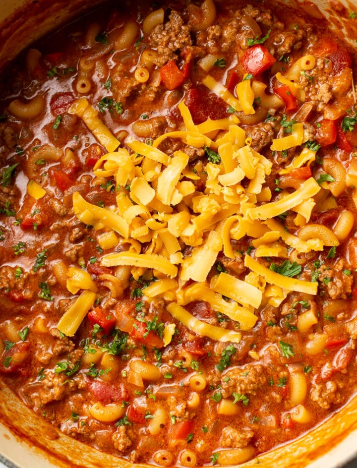

Home
American Goulash

This easy American goulash is a one pot meal that's inexpensive to make and incredibly comforting! It has tender ground beef and macaroni simmered in a perfectly seasoned tomato sauce.
Servings
6
Prep Time
10 Minutes
Cook Time
25 Minutes
Total Time
35 Minutes
Ingredients
- 1 tablespoon olive oil
- 1 pound lean ground beef
- 1 medium onion chopped
- 3 cloves garlic minced
- 1 red or green bell pepper chopped
- 1 (14 fluid ounce) can tomato sauce
- 1 (14 fluid ounce) can diced tomatoes with juices
- 1 cup beef broth (or do 50/50 mix of broth and dry red wine)
- 1/2 teaspoon Italian seasoning
- 1 teaspoon paprika
- 1 pinch crushed red pepper flakes optional
- 1 cup uncooked elbow macaroni
- 2 bay leaves
- Salt & pepper to taste
- 1 cup shredded cheddar optional
Instructions
- Add the oil, beef, onion, and garlic to a soup pot over medium-high heat and cook, breaking the beef up with your spoon as you go along, for about 8 minutes or until browned. If there's a lot of excess fat, spoon most of it out.
- Add the chopped bell pepper, tomato sauce, diced tomatoes, broth, Italian seasoning, paprika, and red pepper flakes to the pot. Bring it to a boil over high heat.
- Stir in the macaroni and bay leaves. Reduce the heat to a rapid simmer so it's still boiling, but not too crazy (I used medium heat). Cook, uncovered, for 12 minutes, stirring occasionally so the pasta doesn't stick to the bottom of the pot.
- Take the pot off the heat and stir in the cheddar. Cover the pot and let it sit for about 5 minutes or until the cheese has melted and the pasta has finished cooking. Season with salt & pepper as needed and enjoy immediately.